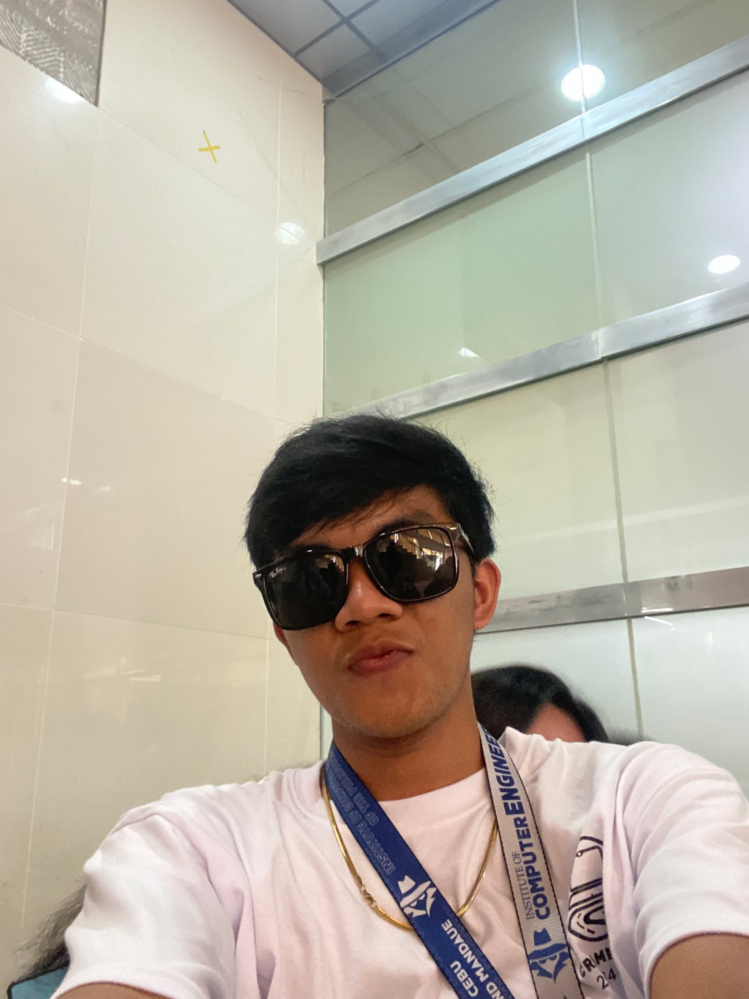

Hello! I'm Niñobert, a dedicated and curious Computer Engineering student at the University of Cebu
Lapu-Lapu and
Mandaue. My passion for technology began at a young age, fueled by a fascination with how things work
and a desire to
create solutions that make life easier and more connected. Over the years, this interest has evolved
into a full-fledged
commitment to exploring the fields of hardware and software, diving deep into programming, electronics,
and system
development. This website serves as both a portfolio of my work and a platform to share what I learn
along the
way—whether that be through tutorials, project breakdowns, or technical articles.
Throughout my academic journey, I’ve worked on a variety of hands-on projects—from circuit-based
solutions using
discrete components to full-stack development and IoT applications involving microcontrollers like the
ESP32. I strongly
believe in the importance of both theory and practice. That’s why I focus not only on designing
functional systems but
also on understanding the principles behind them. Whether it’s a sensor-based automation system, a user
interface
prototype, or a networked application, I aim to create solutions that are not only innovative but also
relevant and
accessible to real-world needs.

This website reflects my growth, curiosity, and commitment to continuous learning. My goal is to inspire
fellow
students, tech enthusiasts, and problem solvers to explore, experiment, and build with purpose. Whether
you're here to
find resources, collaborate on ideas, or simply explore my work, I hope you find something that sparks
your interest.
Feel free to connect with me, leave feedback, or share your own insights—I believe learning is always
better when it’s shared.